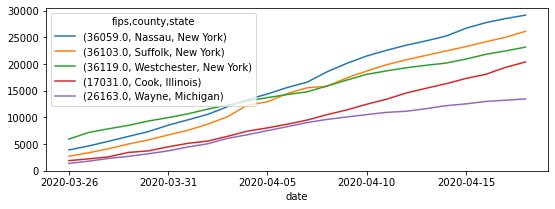

[NOTE: you can download an .ipynb version of this file here]
Prepare COVID data for US counties
%matplotlib inline
import geopandas
import pandas
County boundaries
Source:
https://www.census.gov/geographies/mapping-files/time-series/geo/carto-boundary-file.html
- Pull counties
county_url = "https://www2.census.gov/geo/tiger/GENZ2018/shp/cb_2018_us_county_5m.zip"
counties = geopandas.read_file(county_url)
counties["fips"] = counties["STATEFP"] + counties["COUNTYFP"]
- Simplify table
tokeep = ["GEOID", "fips", "geometry"]
counties_slim = counties[tokeep]
COVID-19 figures
- Pull down data
covid_url = "https://github.com/nytimes/covid-19-data/raw/master/us-counties.csv"
covid = pandas.read_csv(covid_url)
- Remove entries without FIPS codes
covid_w_fips = covid.dropna()
- Keep only newer than March 15th
recent_covid_w_fips = covid_w_fips.assign(pdate=pandas.to_datetime(covid_w_fips["date"]))\
.query("pdate > 'March 25th 2020'")
- Index on everything but counts and widen by date
db = recent_covid_w_fips.set_index(["fips", "county", "state", "date"])\
.unstack()
Example of cases for the top ten counties on April 17th:
db["cases"]\
.sort_values("2020-04-17", ascending=False)\
.head()\
.T\
.plot(figsize=(9, 3))
<matplotlib.axes._subplots.AxesSubplot at 0x7f45de7c0890>

- Clean FIPS
db_clean = db.reset_index()
db_clean["fips"] = db_clean["fips"].astype(int)\
.astype(str)\
.apply(lambda i: i.zfill(5))
db_clean = db_clean.set_index("fips")
Single datasets (cases and deaths)
- Join, keep only geoms with COVID data and write out to single file
for d in ["cases", "deaths"]:
f_path = f"covid_county_{d}.gpkg"
print(f"Preparing {f_path}")
# Keep geoms w/ any COVID data
gdb_all = counties_slim.join(db_clean[d].assign(county=db_clean[("county", "")]),
on="fips"
)
gdb_all = gdb_all.reindex(gdb_all[gdb_all["county"].notnull()].index)
# Retain continental counties only
gdb_all = gdb_all.cx[-130:, :50]
# Write to GPKG
gdb_all.to_file(f_path, driver="GPKG")
Preparing covid_county_cases.gpkg
Preparing covid_county_deaths.gpkg
This work is licensed under a Creative Commons Attribution-ShareAlike 4.0 International License.